so ein
Каждый день
nachsoeinemUrlaub
- so отдыхает, ein пашет.
- Множественного нет. Там solche.
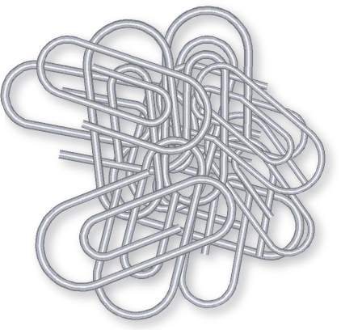
Welcher или was für ein? И зачем немцам ещё so ein и solcher. Разбираем за 10 минут.
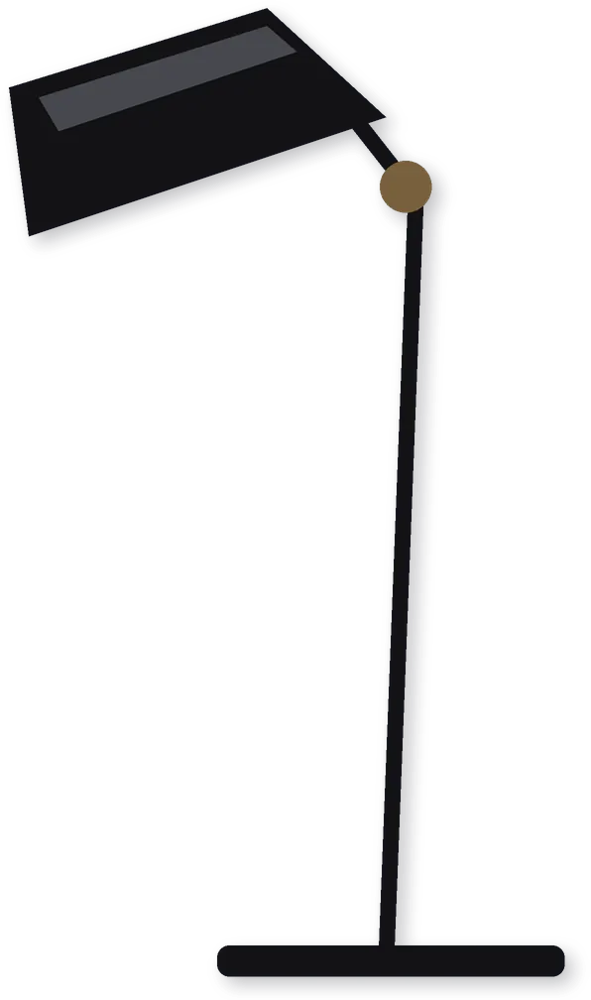
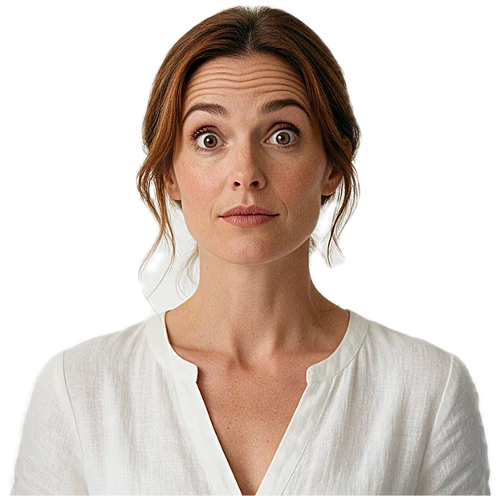
Was für ein? Welcher?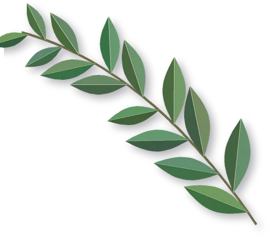
Живу в Австрии. У сестры день рождения. Сестра хочет платье. Я захожу в магазин. В магазине меня спрашивают «какой».
Девушка смотрит на меня. Я смотрю на платья.
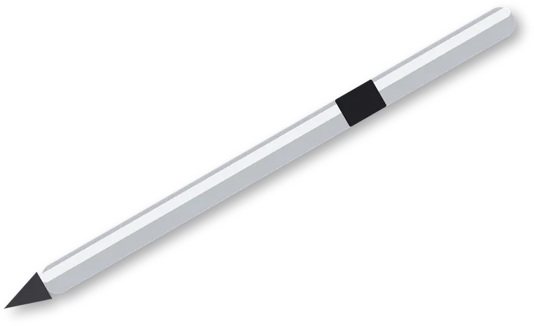
Я перепутал всё, что можно. На вопрос про сорт показал конкретное. На вопрос про конкретное ответил сортом.
Показал пальцем. Говорю, das. Девушка выдохнула. Я потратил год, пока понял, почему. Расскажу, чтобы вы год не теряли.
Сестра, кстати, платье вернула.
Крути вниз. Смотри, что происходит с платьями.
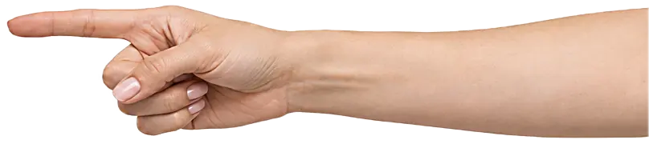
Четыре платья. Ничего не выбрано.
Продавец спрашивает was für ein. Это про сорт. Какое вообще.
Ответ с ein. Любое длинное. Конкретного платья ещё нет.
Короткие ушли. На столе два. Теперь welches. Которое из этих.
Тычешь пальцем. Ответ с das. Вот это красное.
Was für ein листает каталог. Welcher тычет пальцем.
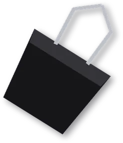
Простой тест. Можно ткнуть пальцем? Welcher. Нельзя? Was für ein.
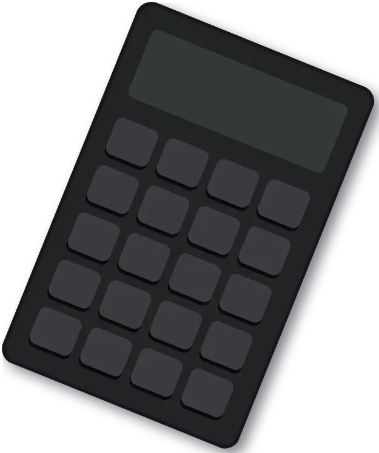
Für тут не предлог. Падеж командует тот, кто снаружи: предлог in и глагол.
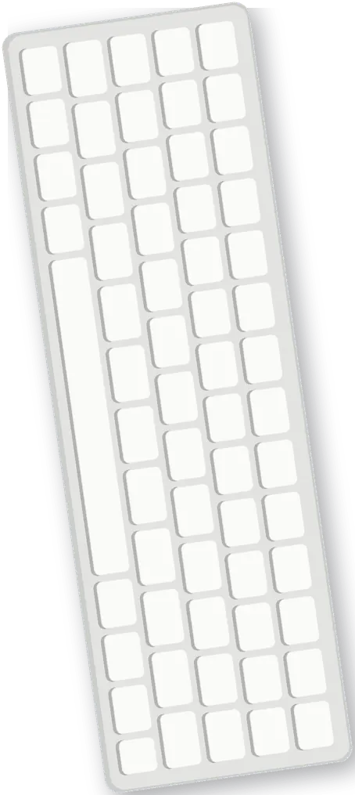
Окончание одно на всю компанию. Кто его взял, тот и работает.
Каждый день
В пиджаке
Оба на смене
Один за всех
Шесть мин на одном поле. Обходим.
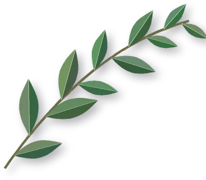
Выбери окончание. Потом проверь всё сразу.
Немецкий не сложный. Он просто спрашивает точнее.
Сестре я потом купил шарф. Шарф не вернули. Но спросили, какой.
Немецкая жизнь это один большой вопрос «какой». Какой размер. Какой тариф. Какая стрижка. Не можешь объяснить, какой хочешь, и вот у тебя тариф, который предложили. И стрижка, которую сделали.
Темы по порядку
Со звуком и по ситуациям
Работа, выбор, что учить первым
Интерактивные гайды
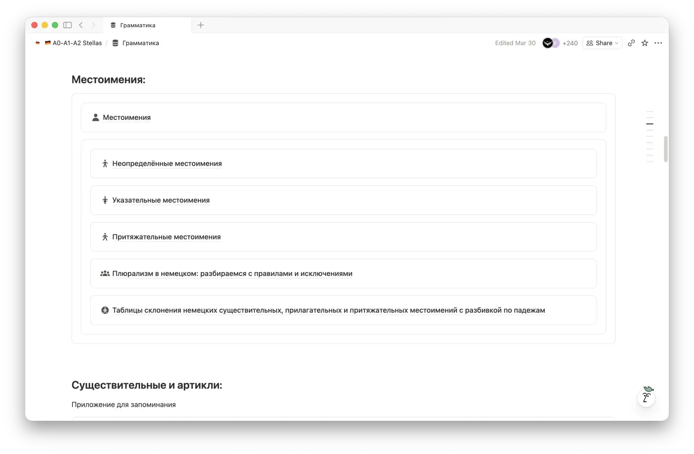

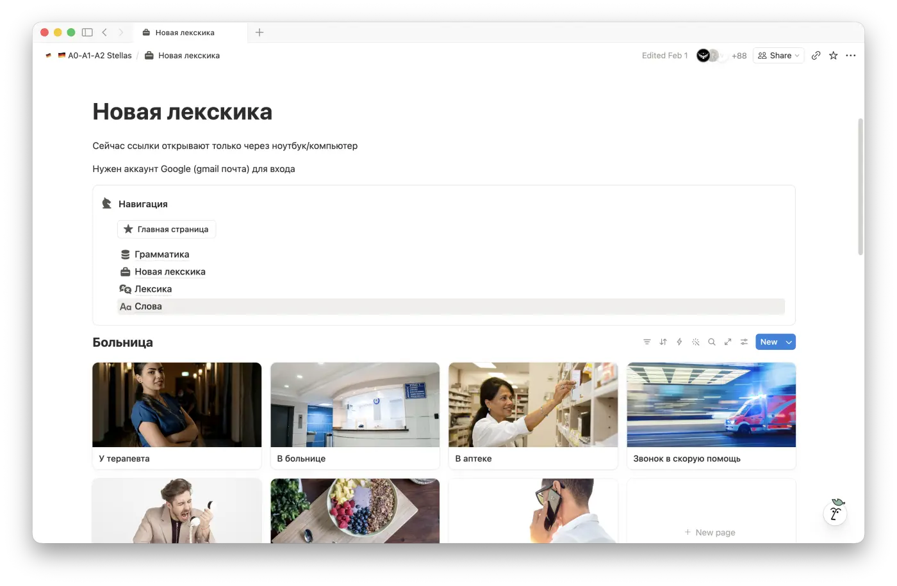


Гайд про местоимения

Цену планируем поднять после новых обновлений. У кого доступ уже есть, получат их бесплатно.
Начать с нуля
20 €
Купить тариф
Выйти на уверенный уровень
20 €
Купить тариф
Весь путь одним платежом
30 €
вместо 40 €
Купить тарифGoethe, telc, DTZ или ÖSD. Не знаешь, какой экзамен нужен? Подготовка уже внутри платформы, и начинается она с этого вопроса.
Всего 269 гайдов, A1–C2. 40 пробников. Тренажёры в 54 гайдах, квизы в 162.
Наша тема тоже там. В тренировке Goethe A1 Hören, Teil 1, задание 2, звучит Was für eine Suppe gibt es heute?
Неверные ответы собираются сами. Перед экзаменом повторяешь только их.


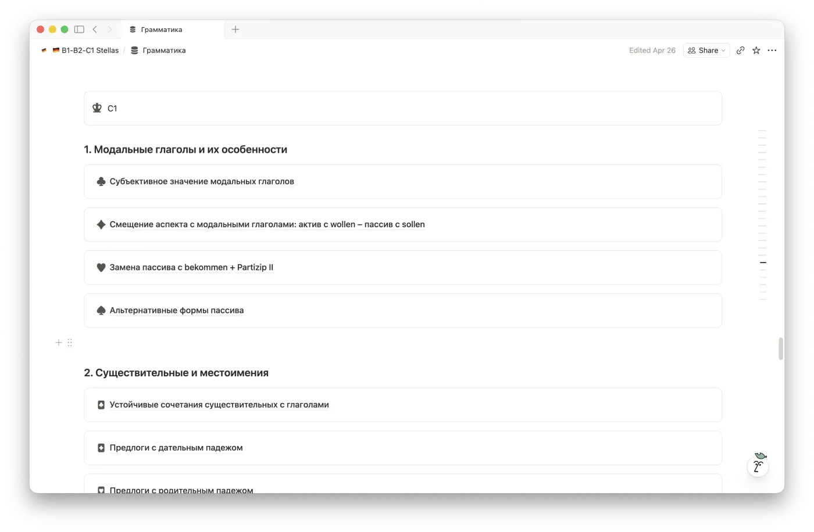
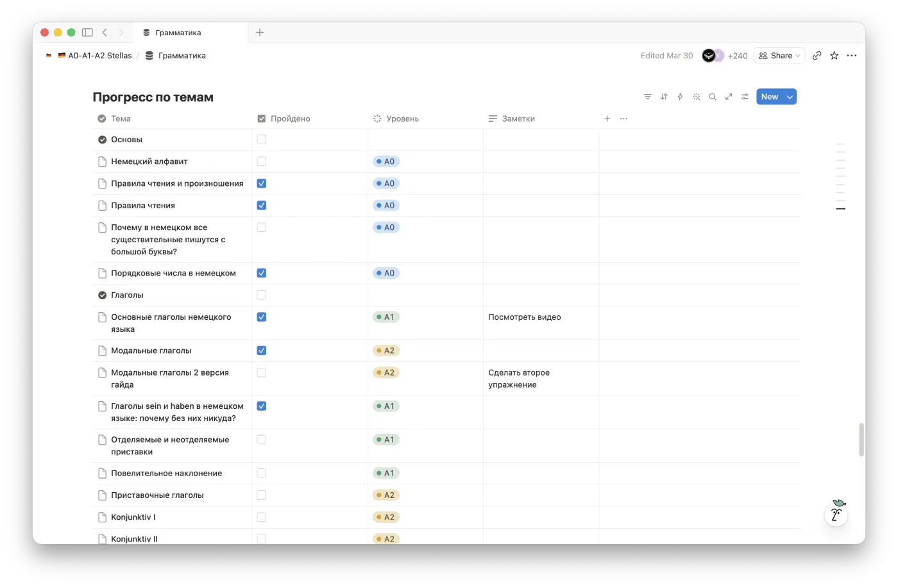


Бери весь путь. Один платёж. Обновления бесплатно.
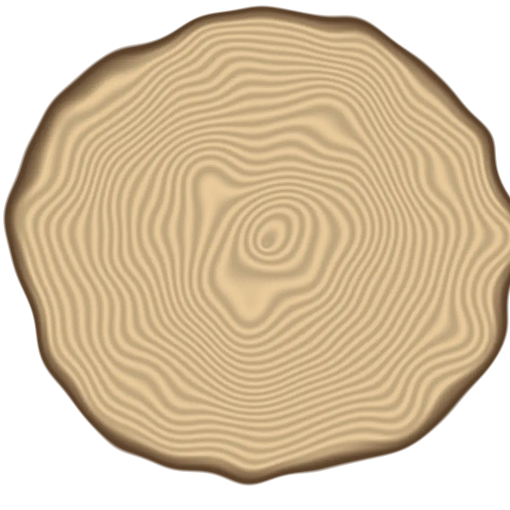
30 €один раз, A0–C1
Купить